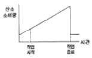
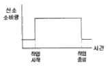
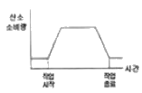
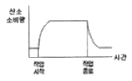
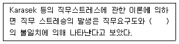
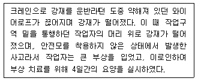
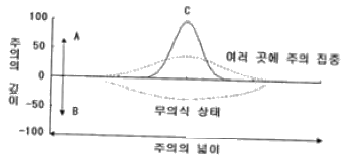
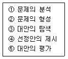
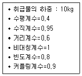
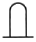

인간공학기사 (2009-07-26 기출문제)
1과목: 인간공학개론
1. 밀러(Miller)의 신비의 수(Magic Number) 7±2와 관련이 있는 인간의 감각-운동 계통은?
- 장기기억
- 단기기억
- 감각기관
- 제어기관
(정답률: 73%)

2. 다음 중 집단의 최대치에 의한 설계로 가장 적합한 것은?
- 선반의 높이
- 조종장치까지의 거리
- 자동차 시트의 앞뒤 조절폭
- 고속버스 내의 의자와 의자 사이의 간격
(정답률: 88%)
3. 일반적으로 새로운 자극이 없는 상태에서 다음 중 가장 먼저 소실되는 기억 체계는?
- 상 보관(iconic storage)
- 향 보관(echoic storage)
- 작업기억(working memory)
- 장기기억(long-term memory)
(정답률: 59%)
4. 표시장치를 사용할 때 자극 전체를 직접 나타내거나 재생 시키는 대신, 정보나 자극을 암호화하는 경우가 흔하다. 이와 같이 정보를 암호화하는 데 있어서 지켜야 할 일반적 지침으로 볼 수 없는 것은?
- 암호의 양립성
- 암호의 민감성
- 암호의 변별성
- 암호의 검출성
(정답률: 83%)
5. 계기판에 등에 8개가 있을 때 그 중 하나만 불이 켜지는 경우의 정보량은 몇 bit 인가?
- 2
- 3
- 4
- 8
(정답률: 68%)
6. 인간-기계 시스템에서 인간의 과오나 동작상의 실패가 있어도 안전사고를 발생시키지 않도록 하는 시스템을 무엇이라고 하는가?
- lock system
- fail-safe system
- fool-proof system
- accident-check system
(정답률: 72%)
7. 인간-기계 시스템에서 정보 전달과 조종이 이루어지는 접합면인 인간-기계 인터페이스(man-machine inter interface)의 종류에 해당하지 않는 것은?
- 지적 인터페이스
- 역학적 인터페이스
- 감성적 인터페이스
- 신체적 인터페이스
(정답률: 55%)
8. 다음 중 인간공학 연구에 사용되는 변수의 유형에 대한 설명으로 적절하지 않은 것은?
- 조사 연구되는 인자는 독립변수로 취급된다.
- 독립변수의 가능한 효과는 종속변수로 취급된다.
- 독립변수는 보통 ‘기준(criterion)’ 이라고도 부른다.
- 기준은 체계기준과 인간기준으로 분류된다.
(정답률: 52%)
9. 다음 중 제품의 행동 유도성에 대한 설명으로 적절하지 않은 것은?
- 행동 유도성을 위해서는 행동에 제약을 주지 않도록 설계해야 한다.
- 사용자의 행동에 단서를 제공한다.
- 사용 설명서를 별도로 읽지 않아도 사용자가 무엇을 해야 할지 알게 설계해야 한다.
- 제품에 물리적 또는 의미적 특성을 부여함으로서 달성 가능하다.
(정답률: 59%)
10. 다음 중 인체측정에 대한 설명으로 틀린 것은?
- 표준자세에서 움직이지 않는 상태를 인체측정기로 측정한 측정치를 구조적 치수라 한다.
- 활동 중인 신체의 자세를 측정한 것을 기능적 치수라 한다.
- 일반적으로 구조적 치수는 나이, 성별, 인종에 따라 다르게 나타난다.
- 인간-기계 시스템의 설계에는 구조적 치수만을 활용하여야 한다.
(정답률: 88%)
11. 작업공간의 수성요소 배치에 대한 원칙 측면에서 볼 때, 자동차의 속도계가 계기판 중간에 위치하여 운전자가 보기 쉽도록 한 것은 다음 중 어떤 원칙에 해당되는가?
- 중요도의 원칙
- 기능성의 원칙
- 사용 순서의 원칙
- 공간 활용 최적화의 원칙
(정답률: 59%)
12. 다음 중 실내의 추천반사율이 높은 것부터 낮은 순으로 올바르게 나열한 것은?
- 천장 > 벽 > 책상 > 바닥
- 천장 > 책상 >바닥 > 벽
- 벽 > 천정 > 책상 > 바닥
- 벽 > 책상 > 천장 >바닥
(정답률: 86%)
13. 다음 중 인간 실수 확률에 대한 추정기법에 해당하는 것은?
- MORT
- 예비위험분석
- 직무위급도분석
- 결함위험도분석
(정답률: 44%)
14. 1000Hz, 80dB인 옹을 phon과 sone으로 환산한 것은?
- 40phon, 4sone
- 60phon, 3sone
- 80phon, 16sone
- 80phon, 2sone
(정답률: 73%)
15. 다음 중 작업 공간 설계에 관한 설명으로 옳은 것은?
- 일반적으로 앉아서 하는 작업의 작업대 높이는 팔꿈치 높이가 적당하다.
- 서서하는 힘든 작업을 위한 작업대는 세밀한 작업보다 높게 설계한다.
- 작업 표준 영역은 어깨를 중심으로 팔을 뻗어 닿을 수 있는 영역이다.
- 군용 비행기의 비상구는 5백분위수 인체측정 자료를 사용하여 설계한다.
(정답률: 87%)
16. 인체의 감각기능 중 후각에 대한 설명으로 옳은 것은?
- 후각에 대한 순응은 느린 편이다.
- 후각은 훈련을 통해 식별능력을 기르지 못한다.
- 후각은 냄새 존재 여부보다 특정 자극을 식별하는데 효과적이다.
- 특정 냄새의 절대 식별 능력은 떨어지나 상대적 비교능력은 우수한 편이다.
(정답률: 68%)
17. 다음 중 조종-반응 비율(Control-Response ratio)에 대한 설명으로 옳은 것은?
- 조종-반응 비율이 낮을수록 둔감하다.
- 조종-반응 비율이 높을수록 조정시간은 증가한다.
- 표시장치의 이동거리를 조종 장치의 이동거리로 나눈 비율을 말한다.
- 회전 꼭지(knob)의 경우 조종-반응 비율은 손잡이 1회전에 상당하는 표시장치 이동거리의 역수이다.
(정답률: 53%)
18. 다음 중 암조응에 대한 설명으로 옳은 것은?
- 어두운 곳에서 밝은 곳으로 들어갈 때 발생한다.
- 어두운 곳에서는 주로 간상세포에 의해 보게 된다.
- 완전 암조응에는 일반적으로 5~10분정도 소요된다.
- 암조응 때에 원추세포는 감수성을 갖게 된다.
(정답률: 77%)
19. 다음 중 전력계와 같이 수치를 정확히 읽고자 할 때 가장 적합한 표시장치는?
- 동침형 표시장치
- 동목형 표시장치
- 계수형 표시장치
- 수직형 표시장치
(정답률: 61%)
20. 다음 중 신호검출이론(SDT)에 대한 설명으로 틀린 것은? (단, β는 음담편견척도이고, d는 감도척도이다.)
- 민감도는 신호와 잡음 평균 간의 거리로 표현한다.
- β 값이 클수록 ‘보수적인 판단자’ 라고 한다.
- d 값은 정규분포표를 이용하여 구할 수 있다.
- 잡음이 많을수록, 신호가 약하거나 분명하지 않을수록 d 값은 커진다.
(정답률: 75%)
2과목: 작업생리학
21. 다음 중 신체 활동 수준이 너무 높아 근육에 공급되는 산소량이 부족하여 생기는 피로물질은?
- 크레아틴산(CP)
- 아데노신삼인산(ATP)
- 글리코겐(glycogen)
- 젖산(Lactic acid)
(정답률: 83%)
22. 다음 중 신체의 열 교환과정에서의 열평형 방정식에 대한 설명으로 틀린 것은?
- 신진대사과정에서 열이 발생하므로 대사 열 발생량은 항상 양수(+) 값이다.
- 증발과정에서는 언제나 열이 발생하므로 증발 열 발산량은 언제나 음수(-) 값이다.
- 신체가 열적평형상태에 있으면 신체 열 함량은 0 이다.
- 신체가 불균형상태에 있으면 신체 열 함량은 항상 상승한다.
(정답률: 67%)
23. 다음 중 진동이 인체에 미치는 영향이 아닌 것은?
- 산소소비량 증가
- 심박수 감소
- 근장력 증가
- 말초혈관의 수축
(정답률: 80%)
24. 육체적 작업을 할 경우 신체의 특정 부위의 스트레스 또는 피로를 측정하는 방법은?
- 에너지소비량 측정
- 부정맥 정수 측정
- 근전도 측정
- 산소소모량 측정
(정답률: 66%)
25. 휴식 중의 에너지 소비량이 1.5kcal/min인 작업자가 분당 평균 8kcal의 에너지를 소비한 작업을 60분 동안 했을 경우 총 작업시간 60분에 포함되어야 하는 휴식 시간은 몇 분인가? (단, Murrell의 식을 적용하며, 작업시 권장 평균에너지 소비량은 5kcal/min으로 가정한다.)
- 22분
- 28분
- 34분
- 40분
(정답률: 73%)
26. 다음 중 정신활동의 부담척도로 사용되는 점멸융합주파수(VFF)에 대한 설명으로 틀린 것은?
- 암조응시는 VFF가 증가한다.
- 연습의 효과는 적다.
- 휘도인 같으면 색은 VFF에 영형을 주지 않는다.
- VFF는 조명 강도의 대수치에 선형적으로 비례한다.
(정답률: 68%)
27. 다음 중 신체 부담을 측정하는 주관적 척도로서 심박수와 높은 상관관계를 맺는 척도는?
- Likert 척도
- 뇌전도(Electroencephalogram)
- 의미 미분(semantic differential) 척도
- Borg-RPE(rating of perceived exertion) 척도
(정답률: 75%)
28. 다음 중 근육계에 관한 설명으로 옳은 것은?
- 수의근은 자율신경계의 지배를 받는다.
- 골격근은 줄무늬가 없는 민무늬근이다.
- 불수의근과 심장근은 중추신경계의 지배를 받는다.
- 내장근은 피로 없이 지속적으로 운동을 함으로써 소화, 분비 등 신체 내부 환경의 조절에 중요한 역할을 한다.
(정답률: 74%)
29. 신체에 전달되는 진동은 전신진동과 국소진동으로 구분되는데 다음 중 진동원의 성격이 다른 것은?
- 크레인
- 지게차
- 그라인더
- 대형 운송차량
(정답률: 88%)
30. 근육운동 중 근육의 길이가 일정한 상태에서 힘을 발휘하는 운동을 나타내는 것은?
- 등장성 운동
- 듬속성 운동
- 등척성 운동
- 단축성 운동
(정답률: 79%)
31. 일정(constant) 부하를 가진 작업 수행시 인체의 산소소비량 변화를 나타낸 그래프로 옳은 것은?




(정답률: 77%)
32. 다음 중 소음관리 대책의 단계로 가장 적절한 것은?
- 소음원의 제거 → 소음수준의 저감 → 소음의 차단 → 개인보호구 착용
- 개인보호구 착용 → 착용소음원의 제거 → 소음수준의 저감 → 소음의 차단
- 소음원의 제거 → 소음의 차단 → 소음수준의 저감 → 개인보호구 착용
- 소음의 차단 → 소음원의 제거 → 소음수준의 저감 → 개인보호구 착용
(정답률: 24%)
33. 다음 중 뇌간(brain stem)에 해당되지 않는 것은?
- 간뇌
- 중뇌
- 뇌교
- 연수
(정답률: 49%)
34. 어떤 작업에 대해서 10분간 산소소비량을 측정한 결과 100L 배기량에 산소가 15%, 이산화탄소가 6%로 분석되었다. 에너지소비량은 몇 kcal/min 인가? (단, 산소 1L가 몸에서 소비되면 5kcal의 에너지가 소비되며, 공기 중에서 산소는 21%, 질소는 79%를 차지하는 것으로 가정한다.)
- 2
- 3
- 4
- 6
(정답률: 43%)
35. 허리부위의 요추는 몇 개의 뼈로 구성되어 있는가?
- 4개
- 5개
- 6개
- 7개
(정답률: 68%)
36. 다음 중 심방수축 직전에 발생하는 파장(wave)은?
- R파
- S파
- P파
- Q파
(정답률: 74%)
37. 다음 중 신체를 전·후로 나누는 면을 무엇이라 하는가?
- 관상면
- 시상면
- 정중면
- 횡단면
(정답률: 61%)
38. 다음 중 낮은 진동수에서의 진동에 영향을 가장 많이 받는 것은?
- 감시
- 의사 표시
- 추적 능력
- 반응 시간
(정답률: 54%)
39. 다음 중 고열발생원에 대한 대책으로 볼 수 없는 것은?
- 고온 순화
- 전체환기
- 복사열 차단
- 방열제 사용
(정답률: 49%)
40. 다음 중 한 방향으로만 움직일 수 있으며, 슬관절과 주관절에 해당하는 관절은?
- 차축관절(pivot joint)
- 경첩관절(hinge joint)
- 안장관절(saddle joint)
- 구상관절(ball and socket joint)
(정답률: 68%)
3과목: 산업심리학 및 관계법규
41. 테밀러(F.W.Taylor)에 의해 주장된 조직 형태로서 관리자가 일정한 관리기능을 담당하도록 기능별 전문화가 이루어진 조직은?
- 위원회 조직
- 직능식 조직
- 프로젝트 조직
- 사업부체 조직
(정답률: 72%)
42. 원자력발전소 주체어실의 직무는 4명의 운전원으로 구성된 근무조에 의해 수행되고 이들의 직무 간에는 서로 영향을 끼치게 된다. 근무조원 중 1차 계통의 운전원 A와 2차 계통의 운전원 B간의 직무는 중간 정도의 의존성(15%)이 있다. 그리고 운전원 A의 기초 HEP Prib{A} = 0.001 일 때 운전원 B의 직무 실패를 조건으로 한 운전원 A의 직무실패확률은? (단, THERP 분석법을 사용한다.)
- 0.151
- 0.161
- 0.171
- 0.181
(정답률: 38%)
43. 허츠버그(Herzberg)가 제시한 근로자들의 직무만족도를 높이기 위한 방법으로 적절하지 않은 것은?
- 되도록 쉬운 임무를 부여한다.
- 완전하고 자연스러운 작업단위를 제공한다.
- 직무에 부가되는 자유와 권위를 준다.
- 특정 직무에 있어서 고도의 전문화된 임무를 배당한다.
(정답률: 45%)
44. 다음 중 민주적 리더십의 발휘와 관련된 적절한 이론이나 조직형태는?
- X 이론
- Y 이론
- 관료주의 조직
- 라인형 조직
(정답률: 82%)
45. 다음 ( )안에 가장 적절한 용어는?

- 조직구조도
- 직무분석도
- 인간관계도
- 직무재량도
(정답률: 73%)
46. 다음과 같은 재해발생시 재해조사분석 및 사후처리에 대한 내용으로 틀린 것은?

- 재해 발생형태는 추락이다.
- 재해의 기인물은 크레인이고, 가해물은 감재이다.
- 불안전한 상태는 약해진 와이어로프이고, 불안전한 행동은 안전모 미착용과 위험구역 접근이다.
- 산업재해조사표를 작성하여 관할 지방노동청장 제출하여야 한다.
(정답률: 78%)
47. 다음 중 베버(Max Weber)의 관료주의 4원칙이 아닌 것은?
- 노동의 분업
- 통제의 범위
- 창의력의 중시
- 권한의 이임
(정답률: 66%)
48. 다음 중 Swain의 휴면 에러 분류에 해당하지 않는 것은?
- 순서 오류(sequential error)
- 시간 오류(time error)
- 위치 오류(location error)
- 수행 오류(commission error)
(정답률: 64%)
49. 주의력 수준은 주의의 넓이와 깊이에 따라 달라지는데 다음 [그림]의 A, B, C에 들어갈 가장 알맞은 내용은?

- A : 주의가 내향, B : 주의가 외향, C : 주의 집중
- A : 주의가 외향, B : 주의가 내향, C : 주의 집중
- A : 주의 집중, B : 주의가 내향, C : 주의가 외향
- A : 주의가 내향, B : 주의 집중, C : 주의가 외향
(정답률: 52%)
50. 다음 중 휴면에러로 이어지는 배후의 4요인 4M에 해당하지 않는 것은?
- Media
- Machine
- Material
- Management
(정답률: 84%)
51. 호손(Hawthorne)의 실험 결과로서 생산성에 영향을 주는 요인으로 분석된 것은?
- 설비 수준
- 조명의 밝기
- 규약의 강도
- 인간 관계
(정답률: 81%)
52. 다음 중 스트레스에 관한 일반적 설명과 관계가 가장 먼 것은?
- A형 성격의 소유자는 스트레스에 더 노출되기 쉽다.
- 스트레스를 받게 되면 자율 신경은 자동적으로 활성화 된다.
- 스트레스가 낮아질수록 업무의 성과는 높아진다.
- 스트레스는 근골격계 질환에 영향을 줄 수 있다.
(정답률: 70%)
53. 인간 오류(human error)의 심리적 측면의 분류에서 필요한 행위를 실행하지 않은 오류를 무엇이라 하는가?
- 수행 오류(commission error)
- 생략 오류(omission error)
- 의사결정 오류(decision making error)
- 정보처리 오류(information processing error)
(정답률: 58%)
54. 다음 중 무의식 상태로 작업수행이 불가능한 상태의 의식수준으로 옳은 것은?
- phase 0
- phase Ⅰ
- phase Ⅱ
- phase Ⅲ
(정답률: 78%)
55. 다음 중 산업안전보건법에서 정의한 중대재해에 해당하지 않는 것은?
- 사망자가 1인 이상 발생한 재해
- 부상자가 동시에 10인 이상 발생한 재해
- 직업성질병자가 동시에 5인 이상 발생한 재해
- 3개월 이상 요양을 요하는 부상자가 동시에 2인 이상 발생한 재해
(정답률: 84%)
56. NIOSH의 직무 스트레스 모형에서 같은 직무 스트레스 요인에서도 개인들이 지각하고 상황에 반응하는 방식에 차이가 있는데 이를 무엇이라 하는가?
- 환경 요인
- 작업 요인
- 조직 요인
- 중재 요인
(정답률: 56%)
57. 상시 근로자가 200명인 A 사업장에서 지난 한 해 동안 2건의 재해로 인하여 73일의 휴업일수가 발생하였다면 이 사업장의 강도율은 약 얼마인가? (단, 근로자는 1일 8시간씩 연간 260일을 근무하였다.)
- 0.125
- 0.144
- 0.175
- 4.808
(정답률: 32%)
58. 다음 중 재해의 발생형태에 해당하지 않는 것은?
- 유해위험물질노출
- 협착
- 이상기압노출
- 화상
(정답률: 43%)
59. 다음 중 비통제적 집단행동에 해당하지 않는 것은?
- 군중(crowd)
- 패닉(panic)
- 모브(mob)
- 유행(fashion)
(정답률: 48%)
60. 가정불화나 개인적 고민으로 인하여 정서적 갈등을 하고 있을 때 나타나는 부주의 협상은?
- 의식의 이완
- 의식의 우회
- 의식의 단절
- 의식의 과잉
(정답률: 64%)
4과목: 근골격계질환 예방을 위한 작업관리
61. 다음 중 근골격계 질환의 직접적인 유해 요인과 가장 거리가 먼 것은?
- 야간 교대 작업
- 무리한 힘의 사용
- 높은 빈도의 반복성
- 부자연스러운 자세
(정답률: 90%)
62. 문제의 분석기법 중 원과 직선을 이용하여 아이디어, 문제, 개념을 개괄적으로 빠르게 설정할 수 있도록 도와주는 연역적 추론방법은?
- Brainstorming
- Mind Mapping
- Mindmelding
- Delphi-Technique
(정답률: 74%)
63. 다음 중 [보기]와 같은 디자인 개념의 문제 해결 절차를 올바른 순서로 나열한 것은?

- ① → ② → ③ → ⑤ → ④
- ② → ① → ③ → ⑤ → ④
- ③ → ② → ① → ④ → ⑤
- ④ → ③ → ⑤ → ② → ①
(정답률: 75%)
64. 평균 관측시간 0.9분, 레이팅 계수가 120%, 여유시간이 하루 8시간 근무시간 중에 28분으로 설정되었다면 표준시간은 약 몇 분인가?
- 0.926
- 1.080
- 1.147
- 1.151
(정답률: 40%)
65. 개정된 NIOSH 들기 작업 지침에 따라 권장 무게 한계(RWL)를 산출하고자 할 때 RWL가 최적이 되는 조건과 거리가 가장 먼 것은?
- 작업자와 물체의 수평거리가 25cm 보다 작을 때
- 물체를 이동시킨 수직거리는 75cm 보다 작을 때
- 정면에서 중량물 중심까지의 비틀림이 없을 때
- 수직높이는 팔을 편안히 늘어뜨린 상태의 손 높이일 때
(정답률: 70%)
66. 다음 중 워크 샘플링(Work sampling)에 대한 설명으로 옳은 것은?
- 시간연구법보다 더 정확하다.
- 자료수집 및 분석시간이 길다.
- 관측이 순간적으로 이루어져 작업에 방해가 적다.
- 컨베이어 작업처럼 짧은 주기의 작업에 알맞다.
(정답률: 81%)
67. 다음 중 수공구의 설계 원리로 적절하지 않은 것은?
- 손목을 곧게 펼 수 있도록 한다.
- 지속적인 정적 근육부하를 피하도록 한다.
- 특정 손가락의 반복적인 동작을 피하도록 한다.
- power grip 보다는 pinch grip을 이용하도록 한다.
(정답률: 77%)
68. 다음 중 근골격계 질환 예방을 위한 바람직한 관리적 개선 방안으로 볼 수 없는 것은?
- 규칙적이고 잦은 휴식을 통하여 피로의 누적을 예방한다.
- 작업 확대를 통하여 한 작업자가 할 수 있는 일의 다양성을 넓힌다.
- 전문적인 스트레칭과 체조 등을 교육하고 작업 중 수시로 실시하도록 유도한다.
- 중량물 운반 등 특정 작업에 적합한 작업자를 선별하여 상대적 위험도를 경감시킨다.
(정답률: 67%)
69. 다음 조건에서 NIOSH Lifting Equation(NLE)에 의한 권한계 무게(RWL)와 들기지수(LI)는 각각 얼마인가?

- RWL = 1.64kg, LI = 6.1
- RWL = 2.65kg, LI = 3.78
- RWL = 3.78kg, LI = 2.65
- RWL = 6.1kg, LI = 1.64
(정답률: 60%)
70. 요소작업이 여러 개인 경우의 관측횟수를 결정하고자 한다. 표본의 표준편차는 0.6이고, 신뢰도 계수는 2인 경우 추정의 오차범위 ±5%를 만족시키는 관측회수(N)는 몇 번인가?
- 476번
- 576번
- 676번
- 776번
(정답률: 60%)
71. 다음 중 근골격계 부담 작업에 근로자를 종사하도록 하는 경우 유해요인조사의 실시주기로 옳은 것은?
- 6월
- 1년
- 2년
- 3년
(정답률: 73%)
72. 다음 중 근골격계 부담 작업에 해당하는 작업은?
- 하루에 25kg의 물건을 5회 들어 올리는 작업
- 하루에 4시간씩 기계의 상태를 모니터링하는 작업
- 하루에 3시간씩 집중적으로 키보드를 이용하여 자료를 입력하는 작업
- 하루에 2시간씩 시간당 15회 손으로 쳐서 기계를 조립하는 작업
(정답률: 59%)
73. 다음 중 공정도(Process Chart)에 사용되는 기호와 명칭이 잘못 연결된 것은?
- : 저장
- : 운반
- : 검사
- : 작업
(정답률: 84%)
74. 다음 중 어깨(견관절) 부위에서 발생할 수 있는 근골격계 질환 유형은?
- 외상 과염
- 회내근 증후군
- 극상근 건염
- 추간판 탈출증
(정답률: 36%)
75. 다음 중 입식 작업보다는 좌식 작업이 더 적절한 경우는?
- 정밀 작업을 해야 하는 경우
- 작업반경이 큰 경우
- 작업시 이동이 많은 경우
- 큰 힘을 요하는 경우
(정답률: 90%)
76. 다음 중 서블릭(Therblig) 기호의 심볼과 영문이 잘못 연결된 것은?
- : TL
- : DA
- : Sh

: H
(정답률: 55%)
77. 다음 중 SEARCH 원칙에 대한 내용으로 틀린 것은?
- Rearrange : 작업의 재배열
- How often? : 얼마나 자주?
- Combine operations : 작업의 결함
- Simplify operations : 작업의 단순화
(정답률: 56%)
78. 디자인 프로세스 단계 중 대안의 도출을 위한 방법이 아닌 것은?
- SEARCH 원칙
- 개선의 ECRS
- Network Diagram
- 5W1H 분석
(정답률: 68%)
79. 다음 중 OWAS 자세평가에 의한 조치 수준에서 각 수준에 대한 평가내용이 올바르게 연결된 것은?
- 수준 1 : 즉각적인 자세의 교정이 필요
- 수준 2 : 가까운 시기에 자세의 교정이 필요
- 수준 3 : 조치가 필요 없는 정상 작업자세
- 수준 4 : 가능한 빨리 자세의 변경이 필요
(정답률: 64%)
80. 다음 중 영상표시단말기(VDT, Visual Display Terminal) 취급의 작업 관리 지침으로 틀린 것은?
- 작업장 주변 환경의 조도를 화면의 바탕 색상이 검정색 계통일 때 300~500lux를 유지하도록 하여야 한다.
- 영상표시단말기 작업을 주목적으로 하는 작업실내의 온도를 18~24℃, 습도는 40~70%를 유지하여야 한다.
- 작업대는 가운데 서랍이 없는 것을 사용하도록 하며, 공간을 확보하도록 하여야 한다.
- 작업 면에 도달하는 빛의 각도를 화면으로부터 45° 이상이 되도록 조명 및 채광을 제한하여 눈부심이 발생하지 않도록 하여야 한다.
(정답률: 44%)